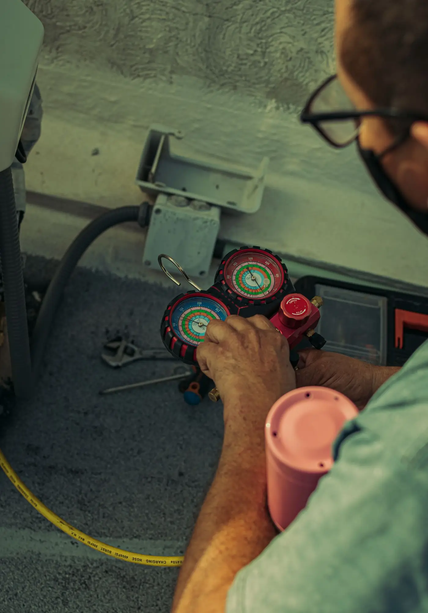

بيع. تركيب.
استبدال. صيانة
نبيع ونركّب وحدات جديدة، ونستبدل أو نشتري القديمة، ونوفر كل ما يلزم لإبقائها تعمل. ثماني خدمات ينفّذها فنيّونا.
٠١ — مكيفات جديدة: بيع وتركيب
New unitsوحدات جديدة بأسعار عادلة وتركيب يدوم. توريد فقط، أو توريد وتركيب. نحدد حجم الوحدة حسب المساحة وحرارة الكويت، لا حسب الكتالوج.
- وحدات سبليت من 1 إلى 3 طن
- وحدات شباك وكاسيت ومخفية من 2 إلى 5 طن
- وحدات باكج من 5 إلى 10 طن للقاعات والمحلات والمستودعات
- مواسير نحاس وتصريف وتوصيل كهربائي ضمن العمل
- تفريغ واختبار تسريب وشحن غاز وتشغيل في كل تركيب
- أسعار توريد بالجملة للمقاولين وملّاك العقارات

٠٢ — استبدال وتحديث المكيفات القديمة
Replace & upgradeالمكيف القديم يكلّفك أكثر كل صيف. نفحصه أولاً ونقول لك بصراحة إذا كان الإصلاح أوفر، وإن كان الاستبدال هو الأصح ننجزه في زيارة واحدة.
- معاينة قبل أي سعر: إصلاح أم استبدال
- وحدة مماثلة، أو ترقية إلى إنفرتر أو مخفي أو VRF
- قيمة وحدتك القديمة تُخصم من سعر الجديدة
- إعادة استخدام المواسير إن كانت سليمة
- فك القديمة واسترجاع الغاز وإعادة تدويرها

٠٣ — نشتري المكيفات القديمة
We buy old unitsشغّالة أو معطّلة، نشتري المكيفات المستعملة من المنازل والمكاتب والعمارات. بعها نقداً، أو ضع قيمتها في وحدة جديدة.
- سبليت وشباك وكاسيت ومخفي وباكج وVRF
- أي ماركة وأي عمر
- تسعير في اليوم نفسه من صورة للوحدة ولوحة بياناتها
- نفكّ الوحدة وننقلها
- نقداً، أو خصماً من سعر وحدة جديدة
- كميات من العمارات والمكاتب ومواقع التجديد

٠٤ — أنظمة VRF والتكييف المركزي
VRF & centralللفلل والمكاتب والمعارض والمباني متعددة الطوابق: غرف كثيرة بتحكم مستقل من نظام واحد عالي الكفاءة.
- وحدات VRF خارجية من 8 إلى 20 حصان
- وحدات داخلية جدارية وكاسيت ومخفية
- حساب الأحمال وتصميم المواسير
- ثرموستات ذكية وتحكم مركزي
- أنظمة سنترال بالدكت للمساحات التجارية

٠٥ — الدكت والعزل
Ductingالدكت الجيد هو الفرق بين غرفة باردة وزاوية باردة. نصنّع ونعزل وننظّف أنظمة الدكت للمباني الجديدة والتجديدات.
- دكت من الصاج المجلفن
- ألواح دكت معزولة مسبقاً
- دكت مرن ومخارج هواء ودامبرات
- عزل وإحكام لحرارة الكويت
- تنظيف أنظمة الدكت

٠٦ — عقود الصيانة السنوية
Maintenance contractsزيارة صيانة مجدولة تكلّف أقل بكثير من عطل في أغسطس. عقودنا تبقي الوحدات نظيفة وتعمل بكفاءة.
- عقود للمنازل والفلل
- عقود تجارية للمكاتب والمعارض والمدارس والعيادات
- تنظيف الفلاتر والكويلات وغسل التصريف
- فحص ضغط الغاز والكهرباء والثرموستات

٠٧ — الإصلاح
Repairعندما يتوقف التبريد نأتي ونشخّص أولاً، ثم نسعّر، ثم نصلح.
- زيارة فحص مع سعر واضح قبل أي إصلاح
- إصلاح تسريب الغاز وتعبئته (R410a وR22)
- استبدال الكمبروسر والمواتير ولوحات التحكم
- تنظيف عميق لوحدات السبليت والشباك
- جميع الماركات
٠٨ — قطع الغيار
Spare partsقطع متوفرة في المخزون، لفنيّينا ولمقاولين وفرق صيانة آخرين.
- كمبروسرات دوّارة وحلزونية
- مواتير مراوح ومكثفات ولوحات تحكم وحساسات
- ثرموستات وصمامات
- مواسير نحاس وعزل ووصلات
- غازات تبريد وفلاتر ومستهلكات

٠٩ — أسئلة شائعة
ما حجم المكيف الذي أحتاجه لغرفة في الكويت؟
كقاعدة عامة، حرارة الكويت تحتاج نحو طن تبريد واحد لكل 12 إلى 15 متراً مربعاً، وأكثر للأدوار العليا والغرف المواجهة للغرب والنوافذ الكبيرة. نؤكد الحجم بمعاينة قبل التسعير.
ما الفرق بين مكيف السبليت والتكييف السنترال؟
مكيف السبليت يبرّد غرفة واحدة بوحدة داخلية وأخرى خارجية. التكييف السنترال (المركزي) يبرّد عدة غرف من وحدة واحدة عبر الدكت، ونظام VRF يشغّل وحدات داخلية كثيرة من وحدة خارجية واحدة مع تحكم مستقل لكل غرفة. نركّب ونصون الأنواع الثلاثة.
هل تشترون المكيفات القديمة أو المستعملة؟
نعم. نشتري وحدات السبليت والشباك والكاسيت والمخفي والباكج وVRF من أي ماركة وأي عمر، شغّالة أو معطّلة. أرسل صورة للوحدة ولوحة بياناتها لتحصل على سعر في اليوم نفسه. ندفع نقداً أو نخصم القيمة من سعر وحدة جديدة.
هل أصلح مكيفي القديم أم أستبدله؟
إذا كانت الوحدة حديثة نسبياً والعطل في المكثف أو موتور المروحة أو تسريب غاز، فالإصلاح عادةً يستحق. أما إذا كانت قديمة، أو تحتاج كمبروسر، أو تعمل بغاز R22، فالاستبدال بوحدة إنفرتر جديدة غالباً أوفر على المدى الطويل، ونخصم قيمة وحدتك القديمة من السعر.
كم مرة يجب صيانة المكيف في الكويت؟
مع غبار الكويت وموسم التبريد الطويل، يُنصح بتنظيف الفلاتر شهرياً وصيانة الوحدة كل ثلاثة إلى أربعة أشهر، مع فحص شامل قبل الصيف. عقد الصيانة السنوي يجدول ذلك لك.
هل تصلحون جميع ماركات المكيفات؟
نعم. نصلح وحدات السبليت والشباك والكاسيت والمخفي والباكج وVRF من مختلف الماركات.